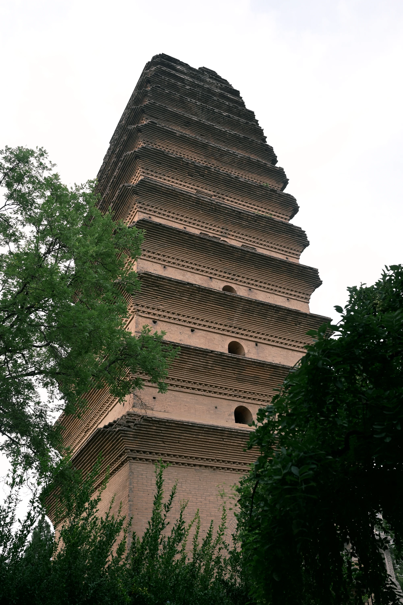

01 / BEIJING · 北京
从宫墙到
城市中轴
一张故宫俯瞰照，作为北京这一章的入口
北京 · 朱红 先从宫城开始，再沿着城市中轴寻找下一座馆
MUSEA
北京 · 博物馆入口IN PREPARATION
故宫博物院
北京 · 宫城与器物
专题筹备中
OPEN / 已上线
中国国家博物馆
北京 · 城市与国家
进入专题 ↗AD FONTES / MUSEUM ATLAS
总馆开题 / OPENING CHAPTER 01
十座博物馆 · 七座专题已上线
点击任意处跳过 SCROLL TO BEGIN
AD FONTES / MUSEUM ATLAS
ITINERARIA MUSEORUM SINARUM
03 省份 · 10 座馆 · 07 个已上线专题
从地方进入一座馆，照片在这里找到它们的方向
打开已上线专题：西安碑林博物馆 ↗MUSEUM ATLAS / 2026
选择省份，查看每座博物馆的照片、文物与参观记录
PROVINCES
03 北京
01 / BEIJING · 北京
一张故宫俯瞰照，作为北京这一章的入口
北京 · 朱红 先从宫城开始，再沿着城市中轴寻找下一座馆
北京 · 宫城与器物
专题筹备中北京 · 城市与国家
进入专题 ↗
02 / SHAANXI · 陕西
从一方碑刻开始，走进西安的石与纸
陕西 · 墨色 字留在石上，照片把它带回今天

西安 · 碑刻与书法
进入专题 ↗西安 · 考古圣地
进入专题 ↗西安 · 秦汉文明
进入专题 ↗
宝鸡 · 周秦青铜文明
进入专题 ↗西安 · 周秦汉唐与特展
进入专题 ↗
西安 · 小雁塔与城市文脉
进入专题 ↗陕西馆舍 / FIXED CAMERA STUDY
九座馆舍被放进同一张时间地形图。镜头固定，建筑保持完成；移入或点按一座馆，看它从地基向上重新汇聚。
前排是中国青铜器博物院与陕西历史博物馆；中排落在碑林与未完工的时间节点；最后一排把考古、秦汉与城市记忆接到远方。
桌面端：把鼠标移到建筑上播放一次装配；移动端：点按一座馆直接查看详情。已上线专题可从详情页进入。

03 / HENAN · 河南
从一件器物开始，读一座城的来处
河南 · 青花瓷 白地留给器物，蓝色指向中原的远方
郑州 · 中原文明
专题筹备中
洛阳 · 古都与器物
专题筹备中